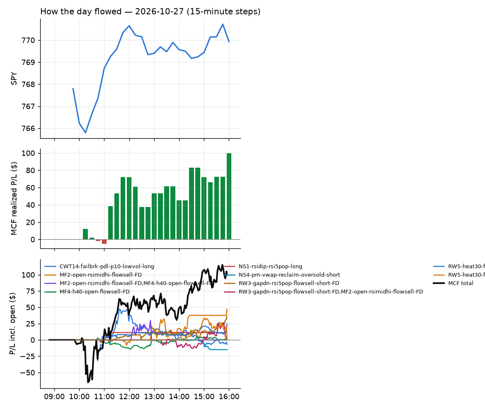
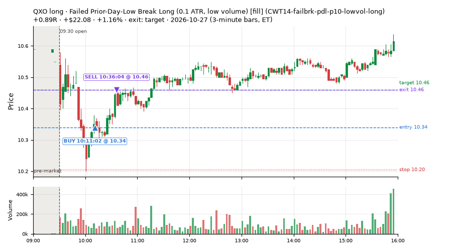
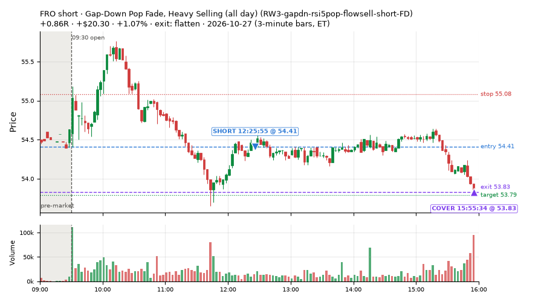
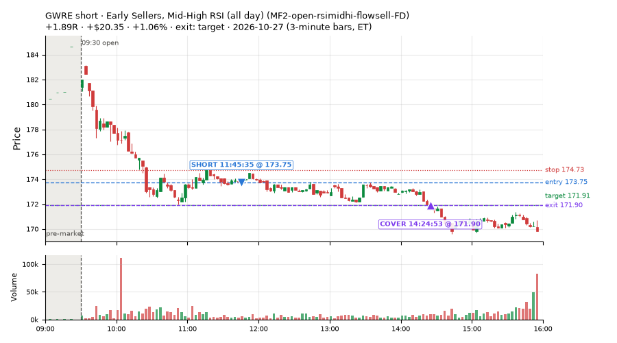
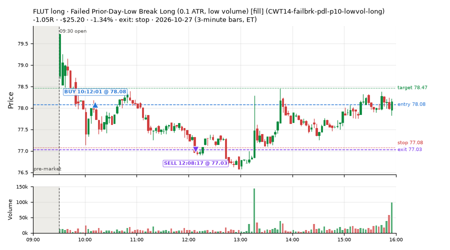
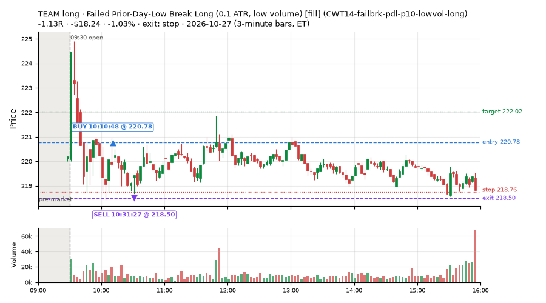
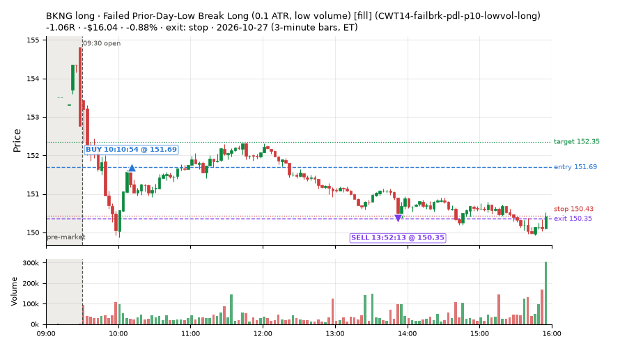
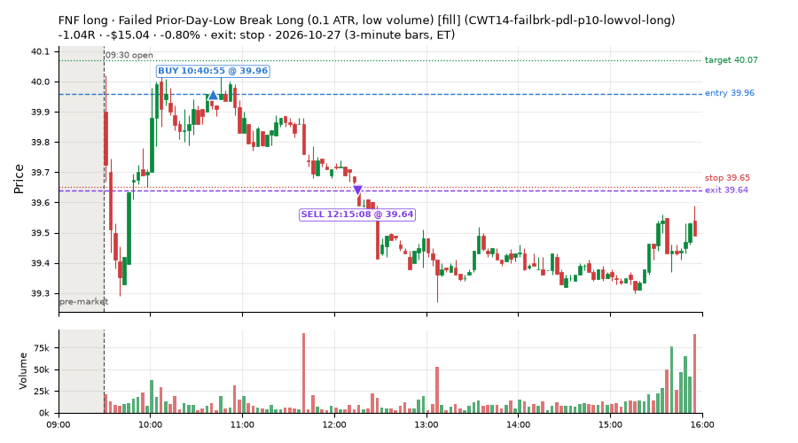
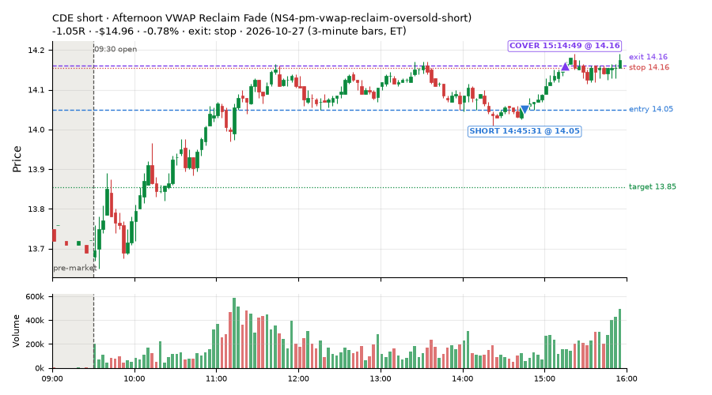

58 trades · win rate 66% · P/L $99.57
PROBATION: no live setup has passed both locked test periods. 10 owner-directed setups added 2026-10-08 (MarcoFlow top 5 + 5 new), untested live. RW6G1 (RW6 + VWAP band guard) added 2026-10-09, probation.

| Symbol | Setup | Side | In | Out | Entry | Exit | Exit reason | % gained | P/L |
|---|---|---|---|---|---|---|---|---|---|
| QXO | Failed Prior-Day-Low Break Long (0.1 ATR, low volume) [fill] (CWT14-failbrk-pdl-p10-lowvol-long) | long | 10:11 | 10:36 | 10.34 | 10.46 | target | +1.16% | $22.08 |
| FRO | Gap-Down Pop Fade, Heavy Selling (all day) (RW3-gapdn-rsi5pop-flowsell-short-FD) | short | 12:25 | 15:55 | 54.41 | 53.83 | flatten | +1.07% | $20.30 |
| GWRE | Early Sellers, Mid-High RSI (all day) (MF2-open-rsimidhi-flowsell-FD) | short | 11:45 | 14:24 | 173.75 | 171.90 | target | +1.06% | $20.35 |
| Symbol | Setup | Side | In | Out | Entry | Exit | Exit reason | % lost | P/L |
|---|---|---|---|---|---|---|---|---|---|
| FLUT | CWT14-failbrk-pdl-p10-lowvol-long | long | 10:12 | 12:08 | 78.08 | 77.03 | stop | -1.34% | $-25.20 |
| TEAM | CWT14-failbrk-pdl-p10-lowvol-long | long | 10:10 | 10:31 | 220.78 | 218.50 | stop | -1.03% | $-18.24 |
| BKNG | CWT14-failbrk-pdl-p10-lowvol-long | long | 10:10 | 13:52 | 151.69 | 150.35 | stop | -0.88% | $-16.04 |
| FNF | CWT14-failbrk-pdl-p10-lowvol-long | long | 10:40 | 12:15 | 39.96 | 39.64 | stop | -0.80% | $-15.04 |
| CDE | NS4-pm-vwap-reclaim-oversold-short | short | 14:45 | 15:14 | 14.05 | 14.16 | stop | -0.78% | $-14.96 |








Signal to fill: median 1s, 90th percentile 3s (58 trades). Bars close each minute; the order follows the bar close.
Best excursion (MFE): median 0.48R; worst (MAE) median 0.36R. 17% of trades never got +0.25R in our favour; 1 reached +1R and still closed at or below 0.
| Symbol | Setup | Best R | Worst R | Closed R |
|---|---|---|---|---|
| OVV | CWT14-failbrk-pdl-p10-lowvol-long | +0.74 | -1.10 | -1.00 |
| IWP | MF4-h40-open-flowsell-FD | +0.48 | -1.07 | -1.09 |
| BKNG | CWT14-failbrk-pdl-p10-lowvol-long | +0.51 | -1.15 | -1.06 |
| VDE | MF2-open-rsimidhi-flowsell-FD | +2.59 | -0.22 | +1.08 |
| EWJ | MF4-h40-open-flowsell-FD | +0.37 | -1.01 | -1.01 |
| Entry time | Trades | Win | Avg R | P/L |
|---|---|---|---|---|
| 09:50-10:30 | 20 | 65% | -0.00 | $-8.61 |
| 10:30-11:30 | 15 | 60% | -0.07 | $13.86 |
| 11:30-13:00 | 9 | 89% | +0.70 | $84.90 |
| 13:00-14:00 | 4 | 25% | -0.03 | $0.66 |
| 14:00-16:00 | 10 | 70% | +0.25 | $8.76 |
| Setup | Trades | Win | Avg R | Adj R (net of SPY) | P/L |
|---|---|---|---|---|---|
| Failed Prior-Day-Low Break Long (0.1 ATR, low volume) [fill] (CWT14-failbrk-pdl-p10-lowvol-long) | 34.0 | 62% | -0.01 | -0.39 | $-6.88 |
| Early Sellers, Mid-High RSI (all day) (MF2-open-rsimidhi-flowsell-FD) | 5.0 | 80% | +1.10 | +1.11 | $47.05 |
| Early Sellers, Strong Heat (all day) (MF4-h40-open-flowsell-FD) | 6.0 | 50% | -0.25 | +0.05 | $2.64 |
| Big Gainer Dip-and-Pop (NS1-rsidip-rsi5pop-long) owner-directed; holdouts once: Sep-Oct +0.326R n10, Apr-Jun +0.056R n119 | 1.0 | 100% | +0.43 | +0.28 | $11.26 |
| Afternoon VWAP Reclaim Fade (NS4-pm-vwap-reclaim-oversold-short) owner-directed; holdouts once: Sep-Oct -0.086R n49, Apr-Jun -0.080R n342 | 1.0 | 0% | -1.05 | -0.95 | $-14.96 |
| Gap-Down Pop Fade, Heavy Selling (all day) (RW3-gapdn-rsi5pop-flowsell-short-FD) | 5.0 | 80% | +0.47 | +0.54 | $35.82 |
| Gap-Down Pop Fade (all day) (RW5-heat30-flowsell-rsi5pop-gapdn-short-FD) | 6.0 | 83% | +0.39 | +0.48 | $24.63 |
Market direction (SPY, beta 1) accounted for $125.04 of today's $99.57; the rest ($-25.47) came from the setups themselves. Avg R net of SPY: -0.05 (incl. a hedge leg's cost; report only).
11 setups live today. Today: 93 signals, 58 taken, 3 lost because another setup held the symbol (3%). Since 2026-10-06 (16 sessions): 1116 signals, 702 taken, 86 lost to other setups (8%). Peak open positions today 21 of 160 slots. Earnings blackout removed 1099 symbols before scanning.
Simulated playing time (not live): 412 what-if trades of signals not taken, avg +0.04R, 57% winners; of them 86 lost to another setup (avg +0.02R).
Silent: intraday_momentum · Crowded out: MF4-h40-open-flowsell, MF3-open-flowsell-rsi5hi, MF5-flowsell-vwapup-rsi5hi · Starved: MF2-open-rsimidhi-flowsell
| Prio | Setup | Today sig / taken | Sessions | Signals / taken / trades | Taken/day | Expected/day | Lost to other setups | Lost to (setup n) | Top skip reasons | SIMULATED: not-taken n / avg R / win | Verdict |
|---|---|---|---|---|---|---|---|---|---|---|---|
| 1 | Gap-Down Pop Fade (all day) RW5-heat30-flowsell-rsi5pop-gapdn-short-FD | 9 / 6 | 8 | 70 / 59 / 59 | 7.38 | 12.79 | 0 | – | spread / quote / size 8, not shortable / shorts off 3 | 11 / +0.09R / 55% | ok 36.9 entries/week |
| 2 | Gap-Down Pop Fade, Heavy Selling (all day) RW3-gapdn-rsi5pop-flowsell-short-FD | 8 / 5 | 8 | 59 / 45 / 45 | 5.62 | 13.59 | 1 | CWT14-failbrk-pdl-p10-lowvol-long 1 | spread / quote / size 7, not shortable / shorts off 6, symbol held by another setup 1 | 14 / +0.24R / 57% | ok 28.1 entries/week |
| 3 | Early Sellers, Mid-High RSI (all day) MF2-open-rsimidhi-flowsell-FD | 8 / 5 | 6 | 46 / 36 / 36 | 6.00 | 10.09 | 4 | RW5-heat30-flowsell-rsi5pop-gapdn-short-FD 4, RW3-gapdn-rsi5pop-flowsell-short-FD 4, MF2-open-rsimidhi-flowsell-FD 4 | symbol held by another setup 4, not shortable / shorts off 3, spread / quote / size 3 | 10 / +1.09R / 80% | ok 30.0 entries/week |
| 4 | Early Sellers, Strong Heat (all day) MF4-h40-open-flowsell-FD | 8 / 6 | 6 | 53 / 31 / 31 | 5.17 | 16.45 | 4 | RW5-heat30-flowsell-rsi5pop-gapdn-short-FD 4, RW3-gapdn-rsi5pop-flowsell-short-FD 4, MF2-open-rsimidhi-flowsell-FD 3 | not shortable / shorts off 9, spread / quote / size 9, symbol held by another setup 4 | 22 / +0.15R / 77% | ok 25.8 entries/week |
| 5 | RSI Collapse Dip Buy (all day) ST7-rsi50dn-long-pm-t1s1-FD | 1 / 0 | 2 | 1 / 0 / 0 | 0.00 | 2.17 | 0 | – | spread / quote / size 1 | 1 / +0.76R / 100% | watch 0.00 entries/day vs ~2.17 expected |
| 6 | Big Gainer Dip-and-Pop NS1-rsidip-rsi5pop-long | 1 / 1 | 14 | 11 / 9 / 9 | 0.64 | 0.92 | 0 | – | spread / quote / size 2 | 2 / +0.39R / 100% | slow 3.2 entries/week; ~19 weeks to 60 trades |
| 7 | Early Sellers, Mid-High RSI MF2-open-rsimidhi-flowsell | 1 / 0 | 14 | 13 / 4 / 4 | 0.29 | 1.30 | 3 | MF2-open-rsimidhi-flowsell-FD 3 | spread / quote / size 4, symbol held by another setup 3, not shortable / shorts off 2 | 9 / +0.21R / 44% | starved 0.29 entries/day vs ~1.30 expected |
| 8 | Big Loser Flush Buy NS5-sma50-flush-oversold-long | 0 / 0 | 14 | 16 / 14 / 14 | 1.00 | 2.41 | 0 | – | spread / quote / size 2 | 2 / +0.85R / 100% | slow 5.0 entries/week; ~12 weeks to 60 trades |
| 9 | Afternoon VWAP Reclaim Fade NS4-pm-vwap-reclaim-oversold-short | 1 / 1 | 14 | 26 / 20 / 20 | 1.43 | 3.05 | 0 | – | not shortable / shorts off 4, spread / quote / size 2 | 6 / -0.27R / 33% | slow 7.1 entries/week; ~8 weeks to 60 trades |
| 10 | Early Sellers, Strong Heat MF4-h40-open-flowsell | 2 / 0 | 14 | 60 / 21 / 21 | 1.50 | 7.24 | 19 | MF4-h40-open-flowsell-FD 14, MF3-open-flowsell-rsi5hi-FD 4, MF3-open-flowsell-rsi5hi 3 | symbol held by another setup 19, not shortable / shorts off 10, spread / quote / size 10 | 39 / -0.07R / 62% | crowded-out 19 of 60 signals (32%) lost to setups already holding the symbol |
| 11 | Failed Prior-Day-Low Break Long (0.1 ATR, low volume) [fill] CWT14-failbrk-pdl-p10-lowvol-long | 54 / 34 | 5 | 114 / 78 / 78 | 15.60 | – | 0 | – | spread / quote / size 35, price through stop/target 1 | 36 / -0.17R / 61% | ok 78.0 entries/week |
Every trade is attached as a CSV you can open and edit in Excel or Google Sheets. Live page: https://misiti15.github.io/MCF/live/